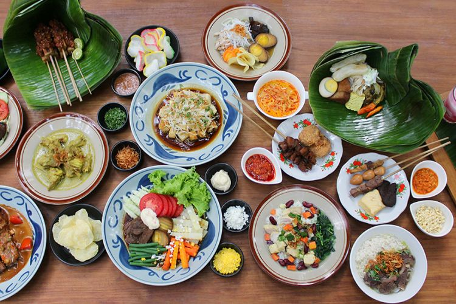

Hey there, I'm Novi the owner of this simple blog
i'm an IT enthusiast
Have you ever heard a quotes saying that "To eat is a necessity, but to eat intelligently is an art" ? Well i think most of you never heard of it before. What i want to explain is that this quotes is the reason why i decide to make this website. Because i hope that by visiting this web you can find the food that you like and the kind of food you never try it before with easily.

About this blog
-
Resep
Pada tab ini berisi list informasi mengenai cara pembuatan makanan dan juga minuman dari berbagai daerah dan negara -

Makanan
Disini kalian bisa menemukan berbagai macam makanan beserta deskripsi singkat tentang makanan tersebut. -
Minuman
Disini kalian bisa menemukan berbagai macam minuman beserta deskripsi singkat tentang minuman tersebut. -
Type
Untuk tab ini akan menampilkan jenis makanan dan minuman yang telah di filter berdasarkan asal tempat makanan tersebut. Sehingga kalian akan dengan mudah menemukan makanan dari luar negeri.